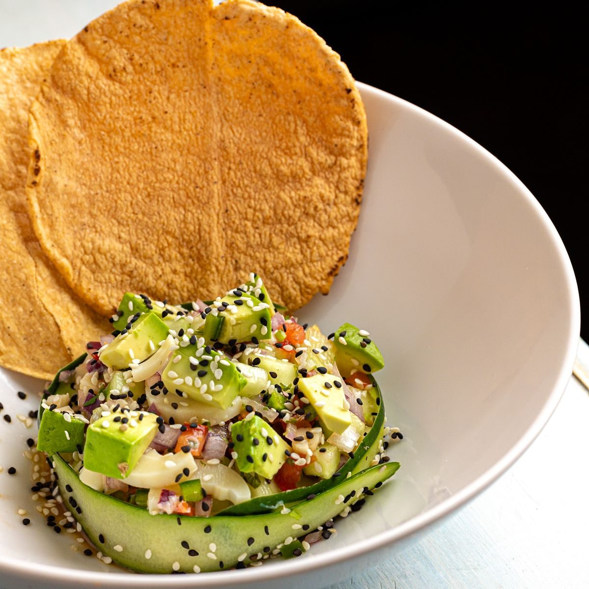

Gallery


50 Elm Cafe & Spirits is a South American-Caribbean cafe and spirits bar at 50 Elm St in Hartford. The menu listed in research includes Colombian empanadas, Peruvian ceviche, oxtail, plantain chips with guacamole, and pisco sour.
